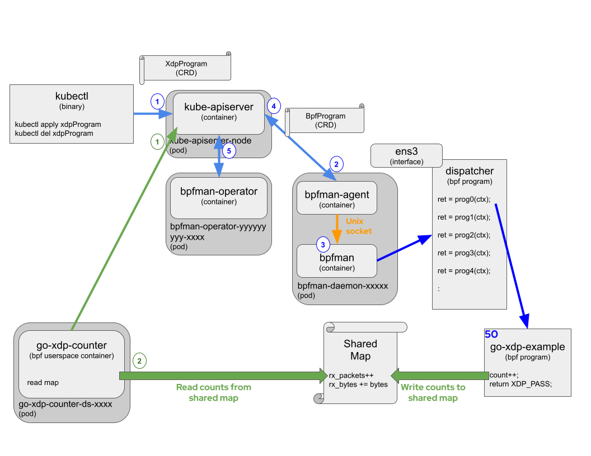

Deploying Example eBPF Programs On Kubernetes
This section will describe launching eBPF enabled applications on a Kubernetes cluster. The approach is slightly different when running on a Kubernetes cluster.
This section assumes there is already a Kubernetes cluster running and bpfman is running in the cluster.
See Deploying the bpfman-operator for details on
deploying bpfman on a Kubernetes cluster, but the quickest solution is to run a Kubernetes KIND Cluster:
Loading eBPF Programs On Kubernetes
Instead of using the userspace program or CLI to load the eBPF bytecode as done in previous sections, the bytecode will be loaded by creating a Kubernetes CRD object. There is a CRD object for each eBPF program type bpfman supports.
- FentryProgram CRD: Fentry Sample yaml
- FexitProgram CRD: Fexit Sample yaml
- KprobeProgram CRD: Kprobe Examples yaml
- TcProgram CRD: TcProgram Examples yaml
- TracepointProgram CRD: Tracepoint Examples yaml
- UprobeProgram CRD: Uprobe Examples yaml
- XdpProgram CRD: XdpProgram Examples yaml
Sample bytecode yaml with XdpProgram CRD:
cat examples/config/base/go-xdp-counter/bytecode.yaml
apiVersion: bpfman.io/v1alpha1
kind: XdpProgram
metadata:
labels:
app.kubernetes.io/name: xdpprogram
name: go-xdp-counter-example
spec:
name: xdp_stats
# Select all nodes
nodeselector: {}
interfaceselector:
primarynodeinterface: true
priority: 55
bytecode:
image:
url: quay.io/bpfman-bytecode/go-xdp-counter:latest
Note that all the sample yaml files are configured with the bytecode running on all nodes
(nodeselector: {}).
This can be configured to run on specific nodes, but the DaemonSet yaml for the userspace program, which
is described below, should have an equivalent change.
Assume the following command is run:
kubectl apply -f examples/config/base/go-xdp-counter/bytecode.yaml
xdpprogram.bpfman.io/go-xdp-counter-example created
The diagram below shows go-xdp-counter example, but the other examples operate in
a similar fashion.

Following the diagram for XDP example (Blue numbers):
- The user creates a
XdpProgramobject with the parameters associated with the eBPF bytecode, like interface, priority and BFP bytecode image. The name of theXdpProgramobject in this example isgo-xdp-counter-example. TheXdpProgramis applied usingkubectl, but in a more practical deployment, theXdpProgramwould be applied by the application or a controller. bpfman-agent, running on each node, is watching for all changes toXdpProgramobjects. When it sees aXdpProgramobject created or modified, it makes sure aBpfProgramobject for that node exists. The name of theBpfProgramobject is theXdpProgramobject name with the node name and interface or attach point appended. On a KIND Cluster, it would be similar togo-xdp-counter-example-bpfman-deployment-control-plane-eth0.bpfman-agentthen determines if it should be running on the given node, loads or unloads as needed by making gRPC calls thebpfman-rpc, which calls into thebpfmanLibrary.bpfmanbehaves the same as described in the running locally example.bpfman-agentfinally updates the status of theBpfProgramobject.bpfman-operatorwatches allBpfProgramobjects, and updates the status of theXdpProgramobject indicating if the eBPF program has been applied to all the desired nodes or not.
To retrieve information on the XdpProgram objects:
kubectl get xdpprograms
NAME BPFFUNCTIONNAME NODESELECTOR STATUS
go-xdp-counter-example xdp_stats {} ReconcileSuccess
kubectl get xdpprograms go-xdp-counter-example -o yaml
apiVersion: bpfman.io/v1alpha1
kind: XdpProgram
metadata:
annotations:
kubectl.kubernetes.io/last-applied-configuration: |
{"apiVersion":"bpfman.io/v1alpha1","kind":"XdpProgram","metadata":{"annotations":{},"labels":{"app.kubernetes.io/name":"xdpprogram"},"name":"go-xdp-counter-example"},"spec":{"bpffunctionname":"xdp_stats","bytecode":{"image":{"url":"quay.io/bpfman-bytecode/go-xdp-counter:latest"}},"interfaceselector":{"primarynodeinterface":true},"nodeselector":{},"priority":55}}
creationTimestamp: "2023-11-06T21:05:15Z"
finalizers:
- bpfman.io.operator/finalizer
generation: 2
labels:
app.kubernetes.io/name: xdpprogram
name: go-xdp-counter-example
resourceVersion: "3103"
uid: edd45e2e-a40b-4668-ac76-c1f1eb63a23b
spec:
bpffunctionname: xdp_stats
bytecode:
image:
imagepullpolicy: IfNotPresent
url: quay.io/bpfman-bytecode/go-xdp-counter:latest
interfaceselector:
primarynodeinterface: true
mapownerselector: {}
nodeselector: {}
priority: 55
proceedon:
- pass
- dispatcher_return
status:
conditions:
- lastTransitionTime: "2023-11-06T21:05:21Z"
message: bpfProgramReconciliation Succeeded on all nodes
reason: ReconcileSuccess
status: "True"
type: ReconcileSuccess
To retrieve information on the BpfProgram objects:
kubectl get bpfprograms
NAME TYPE STATUS AGE
:
go-xdp-counter-example-bpfman-deployment-control-plane-eth0 xdp bpfmanLoaded 11m
kubectl get bpfprograms go-xdp-counter-example-bpfman-deployment-control-plane-eth0 -o yaml
apiVersion: bpfman.io/v1alpha1
kind: BpfProgram
metadata:
annotations:
bpfman.io.xdpprogramcontroller/interface: eth0
bpfman.io/ProgramId: "4801"
creationTimestamp: "2023-11-06T21:05:15Z"
finalizers:
- bpfman.io.xdpprogramcontroller/finalizer
generation: 1
labels:
bpfman.io/ownedByProgram: go-xdp-counter-example
kubernetes.io/hostname: bpfman-deployment-control-plane
name: go-xdp-counter-example-bpfman-deployment-control-plane-eth0
ownerReferences:
- apiVersion: bpfman.io/v1alpha1
blockOwnerDeletion: true
controller: true
kind: XdpProgram
name: go-xdp-counter-example
uid: edd45e2e-a40b-4668-ac76-c1f1eb63a23b
resourceVersion: "3102"
uid: f7ffd156-168b-4dc8-be38-18c42626a631
spec:
type: xdp
status:
conditions:
- lastTransitionTime: "2023-11-06T21:05:21Z"
message: Successfully loaded bpfProgram
reason: bpfmanLoaded
status: "True"
type: Loaded
Deploying an eBPF enabled application On Kubernetes
Here, a userspace container is deployed to consume the map data generated by the eBPF counter program. bpfman provides a Container Storage Interface (CSI) driver for exposing eBPF maps into a userspace container. To avoid having to mount a host directory that contains the map pinned file into the container and forcing the container to have permissions to access that host directory, the CSI driver mounts the map at a specified location in the container. All the examples use CSI, here is go-xdp-counter/deployment.yaml for reference:
cd bpfman/examples/
cat config/base/go-xdp-counter/deployment.yaml
:
---
apiVersion: apps/v1
kind: DaemonSet
metadata:
name: go-xdp-counter-ds
namespace: go-xdp-counter
labels:
k8s-app: go-xdp-counter
spec:
:
template:
:
spec:
:
containers:
- name: go-xdp-counter
:
volumeMounts:
- name: go-xdp-counter-maps <==== 2) VolumeMount in container
mountPath: /run/xdp/maps <==== 2a) Mount path in the container
readOnly: true
volumes:
- name: go-xdp-counter-maps <==== 1) Volume describing the map
csi:
driver: csi.bpfman.io <==== 1a) bpfman CSI Driver
volumeAttributes:
csi.bpfman.io/program: go-xdp-counter-example <==== 1b) eBPF Program owning the map
csi.bpfman.io/maps: xdp_stats_map <==== 1c) Map to be exposed to the container
Loading A Userspace Container Image
The userspace programs have been pre-built and can be found here:
- quay.io/bpfman-userspace/go-kprobe-counter:latest
- quay.io/bpfman-userspace/go-tc-counter:latest
- quay.io/bpfman-userspace/go-tracepoint-counter:latest
- quay.io/bpfman-userspace/go-uprobe-counter:latest
- quay.io/bpfman-userspace/go-xdp-counter:latest
The example yaml files below are loading from these image.
- go-kprobe-counter/deployment.yaml
- go-tc-counter/deployment.yaml
- go-tracepoint-counter/deployment.yaml
- go-uprobe-counter/deployment.yaml
- go-xdp-counter/deployment.yaml
The userspace program in a Kubernetes Deployment doesn't interacts directly with bpfman like it
did in the local host deployment.
Instead, the userspace program running on each node, if needed, reads the BpfProgram object
from the KubeApiServer to gather additional information about the loaded eBPF program.
To interact with the KubeApiServer, RBAC must be setup properly to access the BpfProgram
object.
The bpfman-operator defined the yaml for several ClusterRoles that can be used to access the
different bpfman related CRD objects with different access rights.
The example userspace containers will use the bpfprogram-viewer-role, which allows Read-Only
access to the BpfProgram object.
This ClusterRole is created automatically by the bpfman-operator.
The remaining objects (NameSpace, ServiceAccount, ClusterRoleBinding and examples DaemonSet) can be created for each program type as follows:
This creates the go-xdp-counter userspace pod, but the other examples operate in
a similar fashion.
Following the diagram for the XDP example (Green numbers):
- The userspace program queries the KubeApiServer for a specific
BpfProgramobject. - The userspace program verifies the
BpfProgramhas been loaded and uses the map to periodically read the counter values.
To see if the userspace programs are working, view the logs:
kubectl get pods -A
NAMESPACE NAME READY STATUS RESTARTS AGE
bpfman bpfman-daemon-jsgdh 3/3 Running 0 11m
bpfman bpfman-operator-6c5c8887f7-qk28x 2/2 Running 0 12m
go-xdp-counter go-xdp-counter-ds-2hs6g 1/1 Running 0 6m12s
:
kubectl logs -n go-xdp-counter go-xdp-counter-ds-2hs6g
2023/11/06 20:27:16 2429 packets received
2023/11/06 20:27:16 1328474 bytes received
2023/11/06 20:27:19 2429 packets received
2023/11/06 20:27:19 1328474 bytes received
2023/11/06 20:27:22 2430 packets received
2023/11/06 20:27:22 1328552 bytes received
:
To cleanup:
kubectl delete -f examples/config/base/go-xdp-counter/deployment.yaml
kubectl delete -f examples/config/base/go-xdp-counter/bytecode.yaml
Automated Deployment
The steps above are automated in the Makefile in the examples directory.
Run make deploy to load each of the example bytecode and userspace yaml files, then
make undeploy to unload them.
cd bpfman/examples/
make deploy
for target in deploy-tc deploy-tracepoint deploy-xdp deploy-xdp-ms deploy-kprobe deploy-target deploy-uprobe ; do \
make $target || true; \
done
make[1]: Entering directory '/home/<$USER>/go/src/github.com/bpfman/bpfman/examples'
sed 's@URL_BC@quay.io/bpfman-bytecode/go-tc-counter:latest@' config/default/go-tc-counter/patch.yaml.env > config/default/go-tc-counter/patch.yaml
cd config/default/go-tc-counter && /home/<$USER>/go/src/github.com/bpfman/bpfman/examples/bin/kustomize edit set image quay.io/bpfman-userspace/go-tc-counter=quay.io/bpfman-userspace/go-tc-counter:latest
namespace/go-tc-counter created
serviceaccount/bpfman-app-go-tc-counter created
daemonset.apps/go-tc-counter-ds created
tcprogram.bpfman.io/go-tc-counter-example created
:
sed 's@URL_BC@quay.io/bpfman-bytecode/go-uprobe-counter:latest@' config/default/go-uprobe-counter/patch.yaml.env > config/default/go-uprobe-counter/patch.yaml
cd config/default/go-uprobe-counter && /home/<$USER>/go/src/github.com/bpfman/bpfman/examples/bin/kustomize edit set image quay.io/bpfman-userspace/go-uprobe-counter=quay.io/bpfman-userspace/go-uprobe-counter:latest
namespace/go-uprobe-counter created
serviceaccount/bpfman-app-go-uprobe-counter created
daemonset.apps/go-uprobe-counter-ds created
uprobeprogram.bpfman.io/go-uprobe-counter-example created
make[1]: Leaving directory '/home/<$USER>/go/src/github.com/bpfman/bpfman/examples'
# Test Away ...
kubectl get pods -A
NAMESPACE NAME READY STATUS RESTARTS AGE
bpfman bpfman-daemon-md2c5 3/3 Running 0 2d17h
bpfman bpfman-operator-7f67bc7c57-95zf7 2/2 Running 0 2d17h
go-kprobe-counter go-kprobe-counter-ds-8dkls 1/1 Running 0 2m14s
go-target go-target-ds-nbdf5 1/1 Running 0 2m14s
go-tc-counter go-tc-counter-ds-7mtcw 1/1 Running 0 2m19s
go-tracepoint-counter go-tracepoint-counter-ds-bcbs7 1/1 Running 0 2m18s
go-uprobe-counter go-uprobe-counter-ds-j26hc 1/1 Running 0 2m13s
go-xdp-counter go-xdp-counter-ds-nls6s 1/1 Running 0 2m17s
kubectl get bpfprograms
NAME TYPE STATUS AGE
go-kprobe-counter-example-bpfman-deployment-control-plane-try-to-wake-up kprobe bpfmanLoaded 2m41s
go-tc-counter-example-bpfman-deployment-control-plane-eth0 tc bpfmanLoaded 2m46s
go-tracepoint-counter-example-bpfman-deployment-control-plane-syscalls-sys-enter-kill tracepoint bpfmanLoaded 2m35s
go-uprobe-counter-example-bpfman-deployment-control-plane--go-target-go-target-ds-nbdf5-go-target uprobe bpfmanLoaded 2m29s
go-xdp-counter-example-bpfman-deployment-control-plane-eth0 xdp bpfmanLoaded 2m24s
go-xdp-counter-sharing-map-example-bpfman-deployment-control-plane-eth0 xdp bpfmanLoaded 2m21s
make undeploy
for target in undeploy-tc undeploy-tracepoint undeploy-xdp undeploy-xdp-ms undeploy-kprobe undeploy-uprobe undeploy-target ; do \
make $target || true; \
done
make[1]: Entering directory '/home/<$USER>/go/src/github.com/bpfman/bpfman/examples'
sed 's@URL_BC@quay.io/bpfman-bytecode/go-tc-counter:latest@' config/default/go-tc-counter/patch.yaml.env > config/default/go-tc-counter/patch.yaml
cd config/default/go-tc-counter && /home/<$USER>/go/src/github.com/bpfman/bpfman/examples/bin/kustomize edit set image quay.io/bpfman-userspace/go-tc-counter=quay.io/bpfman-userspace/go-tc-counter:latest
namespace "go-tc-counter" deleted
serviceaccount "bpfman-app-go-tc-counter" deleted
daemonset.apps "go-tc-counter-ds" deleted
tcprogram.bpfman.io "go-tc-counter-example" deleted
:
kubectl delete -f config/base/go-target/deployment.yaml
namespace "go-target" deleted
serviceaccount "bpfman-app-go-target" deleted
daemonset.apps "go-target-ds" deleted
make[1]: Leaving directory '/home/<$USER>/go/src/github.com/bpfman/bpfman/examples'
Individual examples can be loaded and unloaded as well, for example make deploy-xdp and
make undeploy-xdp.
To see the full set of available commands, run make help:
make help
Usage:
make <target>
make deploy TAG=v0.2.0
make deploy-xdp IMAGE_XDP_US=quay.io/user1/go-xdp-counter-userspace:test
General
help Display this help.
Local Dependencies
kustomize Download kustomize locally if necessary.
Development
fmt Run go fmt against code.
verify Verify all the autogenerated code
Build
build Build all the userspace example code.
generate Run `go generate` to build the bytecode for each of the examples.
build-us-images Build all example userspace images
build-bc-images Build bytecode example userspace images
push-us-images Push all example userspace images
push-bc-images Push all example bytecode images
load-us-images-kind Build and load all example userspace images into kind
Deployment Variables (not commands)
TAG Used to set all images to a fixed tag. Example: make deploy TAG=v0.2.0
IMAGE_TC_BC TC Bytecode image. Example: make deploy-tc IMAGE_TC_BC=quay.io/user1/go-tc-counter-bytecode:test
IMAGE_TC_US TC Userspace image. Example: make deploy-tc IMAGE_TC_US=quay.io/user1/go-tc-counter-userspace:test
IMAGE_TP_BC Tracepoint Bytecode image. Example: make deploy-tracepoint IMAGE_TP_BC=quay.io/user1/go-tracepoint-counter-bytecode:test
IMAGE_TP_US Tracepoint Userspace image. Example: make deploy-tracepoint IMAGE_TP_US=quay.io/user1/go-tracepoint-counter-userspace:test
IMAGE_XDP_BC XDP Bytecode image. Example: make deploy-xdp IMAGE_XDP_BC=quay.io/user1/go-xdp-counter-bytecode:test
IMAGE_XDP_US XDP Userspace image. Example: make deploy-xdp IMAGE_XDP_US=quay.io/user1/go-xdp-counter-userspace:test
IMAGE_KP_BC Kprobe Bytecode image. Example: make deploy-kprobe IMAGE_KP_BC=quay.io/user1/go-kprobe-counter-bytecode:test
IMAGE_KP_US Kprobe Userspace image. Example: make deploy-kprobe IMAGE_KP_US=quay.io/user1/go-kprobe-counter-userspace:test
IMAGE_UP_BC Uprobe Bytecode image. Example: make deploy-uprobe IMAGE_UP_BC=quay.io/user1/go-uprobe-counter-bytecode:test
IMAGE_UP_US Uprobe Userspace image. Example: make deploy-uprobe IMAGE_UP_US=quay.io/user1/go-uprobe-counter-userspace:test
IMAGE_GT_US Uprobe Userspace target. Example: make deploy-target IMAGE_GT_US=quay.io/user1/go-target-userspace:test
KIND_CLUSTER_NAME Name of the deployed cluster to load example images to, defaults to `bpfman-deployment`
ignore-not-found For any undeploy command, set to true to ignore resource not found errors during deletion. Example: make undeploy ignore-not-found=true
Deployment
deploy-tc Deploy go-tc-counter to the cluster specified in ~/.kube/config.
undeploy-tc Undeploy go-tc-counter from the cluster specified in ~/.kube/config.
deploy-tracepoint Deploy go-tracepoint-counter to the cluster specified in ~/.kube/config.
undeploy-tracepoint Undeploy go-tracepoint-counter from the cluster specified in ~/.kube/config.
deploy-xdp Deploy go-xdp-counter to the cluster specified in ~/.kube/config.
undeploy-xdp Undeploy go-xdp-counter from the cluster specified in ~/.kube/config.
deploy-xdp-ms Deploy go-xdp-counter-sharing-map (shares map with go-xdp-counter) to the cluster specified in ~/.kube/config.
undeploy-xdp-ms Undeploy go-xdp-counter-sharing-map from the cluster specified in ~/.kube/config.
deploy-kprobe Deploy go-kprobe-counter to the cluster specified in ~/.kube/config.
undeploy-kprobe Undeploy go-kprobe-counter from the cluster specified in ~/.kube/config.
deploy-uprobe Deploy go-uprobe-counter to the cluster specified in ~/.kube/config.
undeploy-uprobe Undeploy go-uprobe-counter from the cluster specified in ~/.kube/config.
deploy-target Deploy go-target to the cluster specified in ~/.kube/config.
undeploy-target Undeploy go-target from the cluster specified in ~/.kube/config.
deploy Deploy all examples to the cluster specified in ~/.kube/config.
undeploy Undeploy all examples to the cluster specified in ~/.kube/config.
Building A Userspace Container Image
To build the userspace examples in a container instead of using the pre-built ones, from the bpfman examples code source directory, run the following build command:
cd bpfman/examples
make \
IMAGE_KP_US=quay.io/$USER/go-kprobe-counter:latest \
IMAGE_TC_US=quay.io/$USER/go-tc-counter:latest \
IMAGE_TP_US=quay.io/$USER/go-tracepoint-counter:latest \
IMAGE_UP_US=quay.io/$USER/go-uprobe-counter:latest \
IMAGE_XDP_US=quay.io/$USER/go-xdp-counter:latest \
build-us-images
Then EITHER push images to a remote repository:
docker login quay.io
cd bpfman/examples
make \
IMAGE_KP_US=quay.io/$USER/go-kprobe-counter:latest \
IMAGE_TC_US=quay.io/$USER/go-tc-counter:latest \
IMAGE_TP_US=quay.io/$USER/go-tracepoint-counter:latest \
IMAGE_UP_US=quay.io/$USER/go-uprobe-counter:latest \
IMAGE_XDP_US=quay.io/$USER/go-xdp-counter:latest \
push-us-images
OR load the images directly to a specified kind cluster:
cd bpfman/examples
make \
IMAGE_KP_US=quay.io/$USER/go-kprobe-counter:latest \
IMAGE_TC_US=quay.io/$USER/go-tc-counter:latest \
IMAGE_TP_US=quay.io/$USER/go-tracepoint-counter:latest \
IMAGE_UP_US=quay.io/$USER/go-uprobe-counter:latest \
IMAGE_XDP_US=quay.io/$USER/go-xdp-counter:latest \
KIND_CLUSTER_NAME=bpfman-deployment \
load-us-images-kind
Lastly, update the yaml to use the private images or override the yaml files using the Makefile:
cd bpfman/examples/
make deploy-kprobe IMAGE_XDP_US=quay.io/$USER/go-kprobe-counter:latest
make undeploy-kprobe
make deploy-tc IMAGE_TC_US=quay.io/$USER/go-tc-counter:latest
make undeploy-tc
make deploy-tracepoint IMAGE_TP_US=quay.io/$USER/go-tracepoint-counter:latest
make undeploy-tracepoint
make deploy-uprobe IMAGE_XDP_US=quay.io/$USER/go-uprobe-counter:latest
make undeploy-uprobe
make deploy-xdp IMAGE_XDP_US=quay.io/$USER/go-xdp-counter:latest
make undeploy-xdp